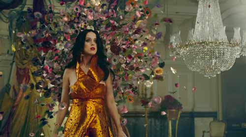

-
Uk Tour dates announced!
20.nov.2013
Today Katy Perry announced that she will be returning to the UK in May 2014 to bring The Prismatic World Tour to cities up and down the country in support of her second UK #1 album, PRISM. The tour will start on 7th May at Belfast’s Odyssey Arena and will continue through Newcastle, Nottingham, Birmingham, Glasgow, Manchester, Liverpool, Sheffield and finally culminating in 3 nights at London’s O2 Arena on 27th, 28th and 30th May. Katy Perry tickets go on sale at 9am on Friday 22nd November from TicketMaster Uk. Great Britain will be the first country on what is expected to be a year-long World Tour.
-
Pre-sale and vip packages for the UK leg of Katy's prismatic world tour
19.nov.2013
Exclusive pre-sale tickets and packages to the UK leg of Katy’s PRISMATIC WORLD TOUR will be available to 02 customers Wednesday, November 20 at 9:00a, two days before the general on-sale Friday, November 22 at . For more information, on the pre-sale visit: . Please note that there is no pre-sale for Belfast. All tickets to the Belfast show will be available starting 9:00a Friday, November 22. Fans not eligible for the pre-sale will still have their choice of seats and packages in all sections starting at 9:00a Friday, November 22 at Ticketmaster.co.uk and LiveNation.co.uk.
-
Watch official video for Unconditionally
18.nov.2013
the official music video for Katy Perry’s Unconditionally directed by Brent Bonacorso with gowns by Chanel, Dolce & Gabbana and Wes Gordon. Katy Tweeted: Yes, unconditional love sometimes feels like being hit by a car…Or being on fire…How does it feel to you?
 -
Unconditionally coming november 19 – Watch trailer now!
14.nov.2013
The Unconditionally music video will be premiering on November 19th at 7:53pm ET on MTV – click here to watch the trailer now!
-
Katy celebrates her birthday with lakewood tigers on GMA!
25.oct.2013
Katy celebrated her birthday with Lakewood Highschool this morning on Good Morning America. Click here to watch her perform Roar and Walking on Air off Prism as well as Firework and also see full image and .gif galleries!
-
Katy on jimmy fallon
11.oct.2013
Katy was a couch guest on Jimmy Fallon last night where she played Taboo and talked about PRISM. Click to watch part one here, and part two here!
Don’t forget to tune in to NBC tomorrow night at 11:30/10:30c where she’ll be performing on Saturday Night Live!